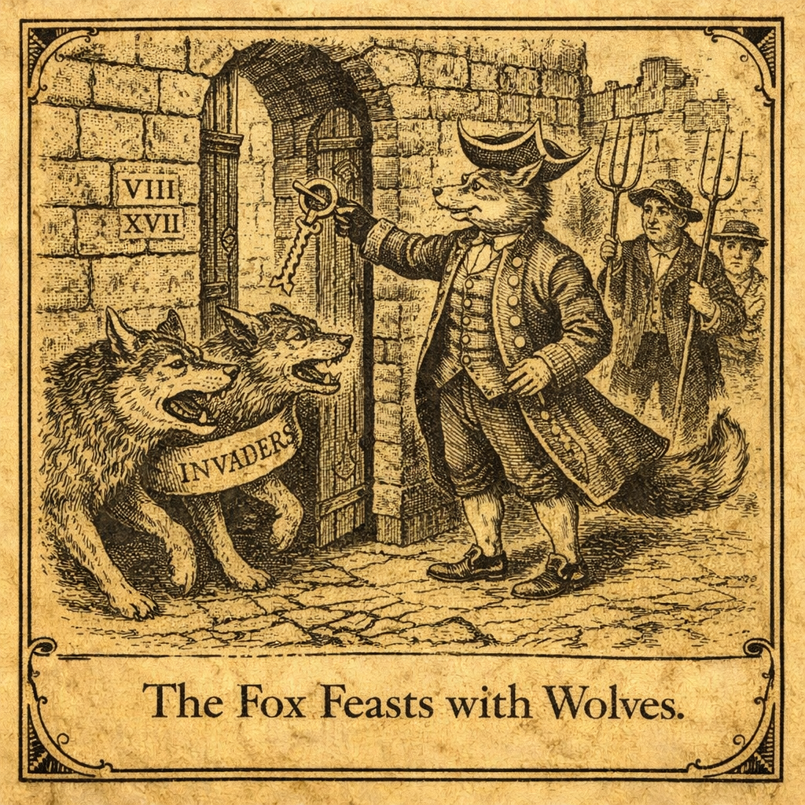
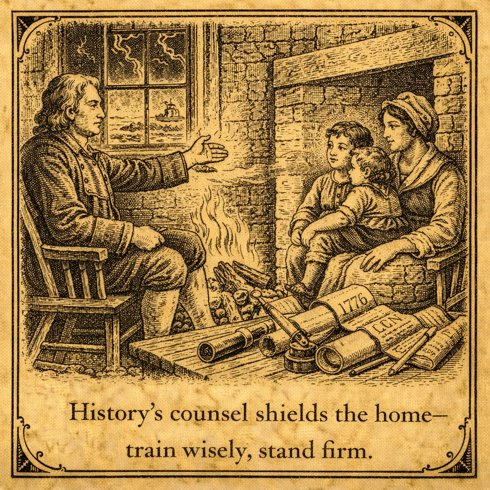
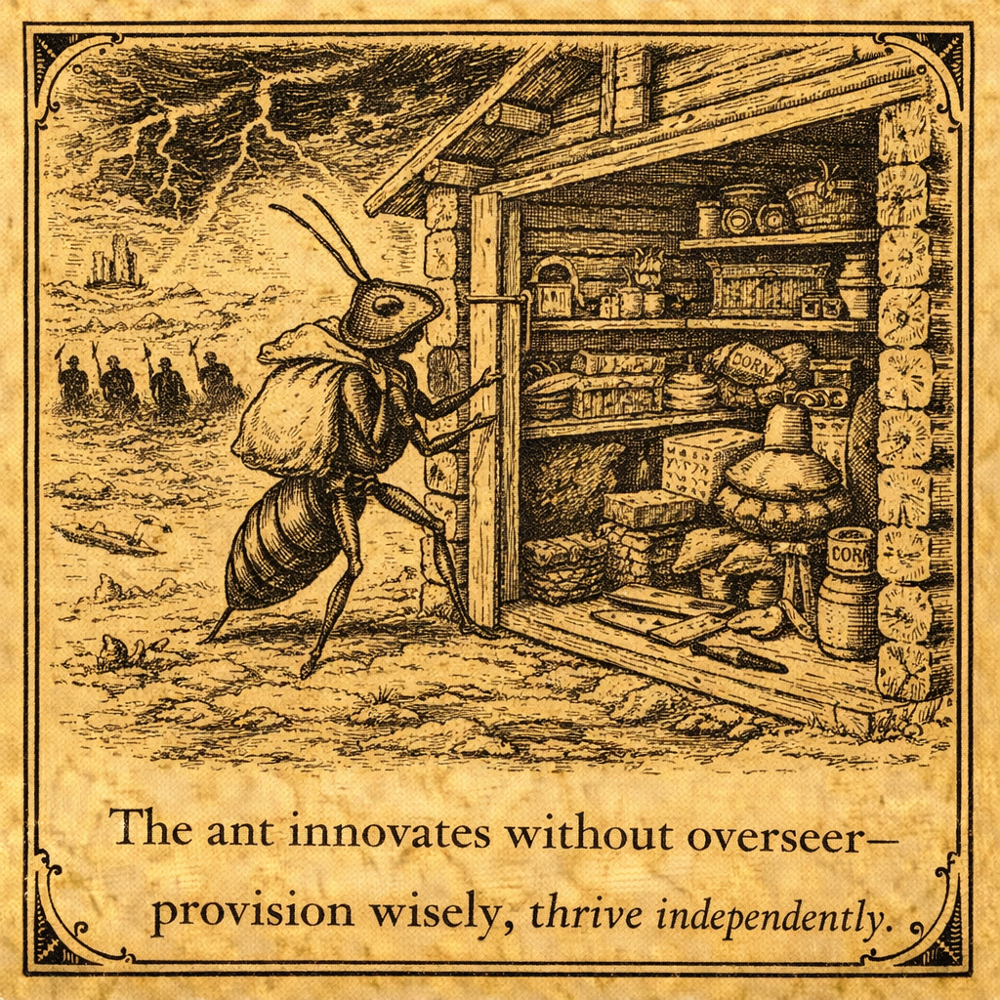

Edition: January 16, 2026
Opening Dispatch
By The Watchman
Fellow patriots, what insanity unfolds as elites in sanctuary havens
like Minnesota shield invaders who drain our resources and spill
innocent blood? In the last week, ICE warriors face ambushes and
lawsuits for daring to enforce borders, while crossings plummet
under bold leadership—proof that America First policies crush the
chaos Biden unleashed.
Yet Democrats wail "tyranny" as illegals commit murders shielded by
their policies, eroding national sovereignty and mocking God-given
unalienable rights. Inflation gnaws at the working man's pocket,
with prices soaring from theft and taxes, a silent tax on
self-reliance.
And censorship creeps, with probes into truth-tellers and shutdowns
silencing dissent, echoing globalist chains that bind free speech.
As Proverbs 21:1 declares, the king's heart turns by the Lord's
hand—pray He guides our leaders to expose these lies.
This madness awakens the complacent: secure borders now, reject
economic traps, defend liberty's voice. Dive into The Plain Truth
for the roast on sanctuary subversion, and rally in Christ against
oppression.
The Plain Truth
By The Sentinel

Ah, the irony drips thicker than molasses in a Minnesota winter:
Democrats sue the feds over ICE raids, screaming "Nazi tactics"
while their sanctuary policies let killers roam free, slaughtering
teens and draining billions in fraud. Picture this absurdity—a
Venezuelan national ambushes an ICE agent with a shovel, causing
internal bleeding, yet the mayor barks "get the f--- out" like a
rabid dog guarding its bone.
Logical breakdown: Sanctuary cities claim compassion, but shield
rapists and murderers, turning streets into cartel playgrounds.
Evidence? ICE detainers ignored, leading to preventable deaths in
North Carolina and beyond—Breitbart tallies the toll, Fox exposes
the scandals.
This hypocrisy subverts rule of law under original
constitutionalism, prioritizing globalist agendas over American
lives. Exaggerate the madness: Elites lecture diversity while
communities flood with unchecked migration, eroding sovereignty like
acid on steel.
Woke censors pile on, subpoenaing journalists for exposing truths,
as if free speech is a crime. Tie it to national sovereignty over
globalism: These traps mock unalienable rights, handing power to
unelected tyrants.
No apologies—dismantle this farce with satire's blade. The wicked
rage, but truth exposes: Reclaim moral ground, enforce borders
ruthlessly, reject the socialist snare. Point to Christ: In His
light, hypocrisy crumbles—act now, faithful, before judgment falls.
Prophetic Parallels
By The Old Prophet
In these days of plummeting border crossings yet persistent
sanctuary defiance, we witness patterns of chaos born from
abandoning divine order, much as ancient Israel strayed into
idolatry, inviting judgment. Consider Jeremiah 6:16: "Thus saith the
Lord, Stand ye in the ways, and see, and ask for the old paths..."
Exegesis reveals a call to realign with eternal foundations—biblical
morality as the bedrock of nations, where limited government and
self-reliance stem from fearing the Living God.
Modern woes mirror this: Minnesota's mobs protesting ICE echo the
rebellious crowds rejecting prophets, their hearts deceitful,
fostering cultural decay through unchecked migration that erodes
family structures and national sovereignty.
Psychological insight: Such disorder arises from collective denial,
where elites prioritize globalism over America's destiny, leading to
inflation's theft of labor's fruit—a subtle idolatry of mammon.
Scripture warns in Jeremiah of cities laid waste for forsaking
truth; today, crimes by shielded illegals and censorship's veil
(e.g., journalist subpoenas) signal impending collapse unless
repentance turns the tide.
Layered reasoning: Chaos thrives in moral vacuum, but order returns
through discipline—revive traditional values, enforce rule of law.
Anchor in faith: The Living God grants wisdom's start; realign
families and nation to His paths, averting judgment. End with nudge:
Repent of complacency, embrace Christ for revival.
Victory Reports
By The Frontier Builder
Break down the wins: First, border apprehensions crater 85%
post-inauguration, data from CBP proving Trump policies iterate
effectively—testable components like ending catch-and-release yield
measurable security, aligning with free enterprise by slashing fraud
costs.
Pragmatic iteration: GOP senators tout this at the border,
rebranding tax cuts for working families, injecting efficiency into
a bloated system. Second, inflation dips to 4.3%, logic shows energy
dominance and supply chain hacks curbing price spikes from
theft—visionary: Localize production to reject foreign dependency,
boosting industrial strength.
Third, pushback on censorship: Press groups blast House subpoena of
journalist, defending unalienable rights; UK's fine on X sparks
outrage, but Musk's defiance iterates free speech innovations.
Fourth, economic banner year forecast by Rep. Tenney—data-driven:
Growth surges as deficits tame, embodying personal responsibility.
Fifth, sanctuary cracks: ICE raids expose fraud rings topping $2B in
Minnesota, equipping communities to reclaim resources.
These triumphs evidence God's sovereignty through bold
experimentation—reject complacency, build sovereign strength like
the ant. Nudge: Experiment with faith-based action in Christ for
enduring progress.
The Common Man's Counsel
Reader Question: "With inflation biting hard and border chaos
spilling into our towns via crimes and resource drains, how do I
shield my family from these economic and safety traps?" – Submitted
anonymously

Brother, draw from history's lessons: As Jefferson warned, elites
sell out the heartland, shrinking paychecks while invaders burden
schools and entitlements—echoing colonial exploitation that sparked
revolution. Reflective strategy: Prioritize family as morality's
bedrock, fostering self-reliance for independence.
Step one: Budget wisely—track expenses, cut non-essentials, echoing
Vance's hillbilly thrift amid rust belt decay. Step two: Build
skills—train in trades like plumbing or coding, local governance
programs offer free courses, resisting urban decadence.
Step three: Secure home—join neighborhood watches, advocate for
local enforcement against sanctuary follies, upholding original
constitutionalism.
Step four: Educate kin—teach biblical values via Proverbs 22:6,
countering woke indoctrination with home discussions on America
First.
Step five: Stock essentials—modest pantry against inflation spikes,
drawing from frontier self-sufficiency. This protects dignity,
strengthens communities—no nonsense, empathetic plain-speak. Tie to
personal responsibility: Answer to God, provide for yours. Action in
faith: Train up in Christ's way for enduring strength.
Seek Counsel from The Watchman
Fellow patriots, have you a question weighing on your mind? A
dilemma that vexes your household, a concern for your trade, or a
matter of principle that demands counsel? The Watchman stands
ready to answer. Send your question—your name, your trade, your
concern—and we shall address it with the same plain truth and
practical wisdom that built this republic. No question too small,
no burden too great.
Submit Your Question Here
Practical Self-Reliance Corner

By The Frontier Builder
Tackle inflation and border spills head-on with these hacks,
breaking issues into testable steps for independence amid decay. Tip
1: Garden localize—plant hardy veggies like potatoes, iterate soil
tests for yield, cutting grocery dependency by 20-30% per data.
Tip 2: Energy audit—seal drafts, switch to LED, logic shows 15% bill
drop, rejecting foreign oil traps. Tip 3: Trade barter networks—join
local groups for goods swap, visionary against price hikes from
theft.
Tip 4: Skill up—online free courses in repair, testable via small
projects, fostering free enterprise. Tip 5: Emergency kit—stock
water, non-perishables for disruptions, data from past crises proves
preparedness pays.
Tip 6: Community alliances—form watches for safety, iterating
patrols to counter invasion risks. Align with limited government:
Enable creativity, fuel progress.
Inspire as faith duty—innovate boldly, point to Christ for wisdom.
Proverbs 6:6-8
"Go to the ant, thou sluggard;
consider her ways, and be wise: Which having no guide, overseer, or
ruler, Provideth her meat in the summer, and gathereth her food in
the harvest."
Prayer of the Week & Closing Call
By The Old Prophet
![Illustration: Prayer of the Week & Closing Call - Heavenly Father, in these times of border victories shadowed by defiance, economic strains, and silencing veils, we seek Thy ancient paths. As Jeremiah warned of decay, forgive our nation's stray into idolatry of globalism and self. Grant wisdom to leaders upholding sovereignty, strength to families amid inflation's bite, courage against censorship's chains. Revive biblical morality, limited government as Thy order. In Christ's name, who redeems chaos, amen.](images/POW1.16.26.png)
Heavenly Father, in these times of border victories shadowed by
defiance, economic strains, and silencing veils, we seek Thy ancient
paths. As Jeremiah warned of decay, forgive our nation's stray into
idolatry of globalism and self. Grant wisdom to leaders upholding
sovereignty, strength to families amid inflation's bite, courage
against censorship's chains. Revive biblical morality, limited
government as Thy order. In Christ's name, who redeems chaos, amen.
Actions: 1. Contact reps—demand Secure the Border
Act passage. 2. Pray daily for ICE guardians. 3. Build local
alliances against woke traps. 4. Share this edition anonymously. 5.
Submit dilemmas securely—no fear—to equip faithful in Christ at
watchmanscry.site.